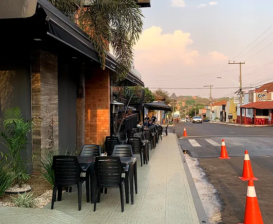

Bananeira's Burger & Grill
Celebre os seus sentidos
Com inspiração na cultura local e uma paixão por diferentes culturas, o Bananeiras Burger & Grill tem um amplo cardápio de delícias culinárias, utilizando os ingredientes mais frescos para levar pratos caseiros diretamente à sua mesa.
Entre em contato
Sobre
Nascido em 2018, o Bananeiras Burger & Grill é conhecido por revolucionar a forma como as pessoas comem e desfrutam a comida. Temos orgulho da nossa capacidade de descobrir os sabores mais extraordinários de todo o mundo e partilhá-los com os habitantes de Goiatuba. Junte-se a nós.
Horário
Jante conosco ou compre e leve para casa
Segunda a Quinta: das 17h às 23h
Sexta e Sábado: das 17h às 00:00
Domingo: das 12h às 22h
A nossa comida
O cardápio elaborado pelo chef destaca os ingredientes sazonais em pratos simples e artesanais servidos diretamente da nossa cozinha à sua mesa. Valorize a sua experiência com uma seleção de nossas bebidas de e, confie em nós, não dispense a sobremesa!
Picanha Premium na Chapa
Adicionamos um toque diferente à nossa Picanha Grelhada. Simplicidade é o nosso truque: usamos ingredientes frescos e oferecemos uma variedade de guarnições. Pronto para essa sensação culinária?
Hambúrguer
Preparado à perfeição, esse delicioso hambúrguer é composto pelos melhores ingredientes. Não deixe de experimentar e se surpreenda com essa explosão de sabores.
Entre em contato
Rua Xingu, 542 - Centro, Goiatuba - GO, 75600-000, Brazil
(64) 98405-3897